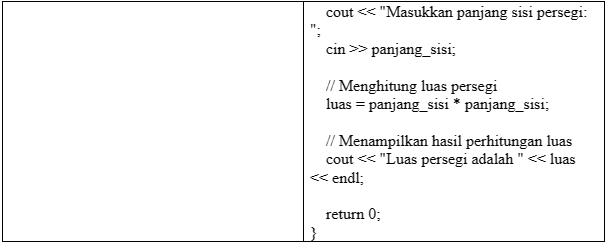

Algoritma dan Pemrograman
Materi
- Pengenalan
- Pengertian Algoritma
- Contoh Algortima Sederhana
- Cari mesin pindai tiket yang tersedia di area stasiun kereta api untuk keberangkatan.
- Buka aplikasi tiket kereta api dan munculkan kode pesanannya.
- Pindai kode pesanan di tempat yang disediakan.
- Setelah berhasil dipindai, maka penumpang sudah bisa masuk ke area keberangkatan kereta api.
- Pengertian Pemrograman
- Ciri-ciri Algortima dan Pemrograman
- Keterbatasan (Finiteness).
- Masukan (Input).
- Keluaran (Output).
- Kepastian (Definiteness).
- Keefektivitasan (Effectiveness).
- Terstruktur (Structured).
- Syarat Algoritma yang Baik
- Tingkat kepercayaan tinggi.
- Pemrosesan yang efisien.
- Bersifat general.
- Mudah dimengerti.
- Memiliki portabilitas yang tinggi.
- Efektif.
- Harus seminator.
- Keluaran yang dihasilkan tepat.
- Dapat dikembangkan.
- Harus tepat.
- Penyajian Algoritma
- Algoritma dengan struktur Bahasa Indonesia.
- Algoritma dengan diagram alir (Flowchart).
- Algoritma dengan Pseudocode.
- Diagram Alir (Flowchart)
- Pseudocode
- Tipe Pemrograman
- Pemrograman terstruktur
- Runtun – urut (sequence).
- Pilihan (selection).
- Pengulangan (repetition - loop)
Apa sih algoritma dan pemrograman itu? Algoritma dan pemrograman adalah serangkaian langkah atau instruksi yang digunakan untuk memecahkan masalah secara logika dan matematika. Dalam pemrograman, algoritma digunakan untuk menentukan alur logika program. Program harus dihasilkan dari proses pemahaman permasalahan, analisis, sintesis dan dituangkan menjadi kode dalam Bahasa komputer secara sistematis dan metodologis.
Algoritma adalah suatu kumpulan instruksi terstruktur dan terbatas yang dapat diimplementasikan dalam bentuk program komputer untuk menyelesaikan suatu permasalahan komputeasi tertentu. Hal penting dari algoritma adalah bahwa algoritma itu dibuat untuk dapat dipahami oleh manusia dan juga komputer. Sehingga algoritma akan diterjemahkan menjadi kode program untuk memberikan perintah pada perangkat komputer.
Berikut ini adalah contoh dari algoritma memindai tiket kereta api:
Pemrograman adalah sebuah kumpulan instruksi tersendiri yang biasa disebut dengan kode sumber (source code). Saat ini, perangkat komputer tidak dapat berpikir sendiri, sehingga hanya menjalankan instruksi yang diberikan atau yang sudah tersimpan di komputer dan siap untuk dijalankan. Komputer meminta pengguna untuk memberikan serangkaian instruksi yang diperintahkan untuk mengetahui apa yang harus dilakukan. Instruksi tersebut harus bisa dipahami dan dimengerti oleh komputer yang disebut sebagai “kode”, oleh karena itu, pemrograman juga sering disebut dengan coding (mengode).
Ciri-ciri dari algoritma dan pemrograman adalah:
Syarat sebuah algoritma yang baik adalah:
Dalam penyajian algoritma terbagi ke dalam tiga bentuk yaitu:
Berikut Penjelasannya:
Diagram alir dibuat dalam bentuk aliran simbol yang dapat ditelusuri dari suatu titik permulaan hingga titik akhir dari program. Diagram alir dibuat menggunaan symbol standar ANSI/ISO yang beberapa simbol dasarnya ditunjukkan pada tabel berikut ini:
Untuk memahami bagaimana diagram alir digunakan untuk menggambarkan suatu algoritma, berikut ini diberikan contoh diagram alir.
Diagram Alir: Menghitung Luas Persegi

Pseudocode (kode semu atau kode pseudo) adalah suatu bahasa buatan manusia yang sifatnya informal untuk merepresentasukan algoritma. Pseudocode dibuat untuk menutupi kekurangan diagram alir dalam merepresentasikan konsep-konsep pemrograman terstruktur. Akan tetapi, ada beberapa prinsip dasar yang perlu diperhatikan, yaitu satu baris untuk satu pernyataan dan pentingnya indentitasi dalam menuliskan pernyataan.
Pada contoh diagram alir sebelumnya, dapat ditulis kedalam bentuk pseudocode berikut ini:

Setelah selesai Menyusun suatu algoritma, barulah suatu program dibuat dengan menambahkan Bahasa pemrograman tertentu. Ada banyak Bahasa pemrograman yang bisa digunakan, misalnya bahasa C, bahasa C++, bahasa Python, dan lainnya yang digunakan pada unit analisis data.
Sumber Referensi
- Muhammad, A. (2023, Februari 15). Algoritma Pemrograman: Pengertian, Fungsi, Cara Kerja, Contoh. Retrieved from niagahoster.com.
- Thabroni, G. (2022, Februari 22). Algoritma dan Pemrograman. Retrieved from serupa.id.
- Mushthofa, d. (2021, Juni). Informatika. Retrieved from static.buku.kemendikbud.go.id.